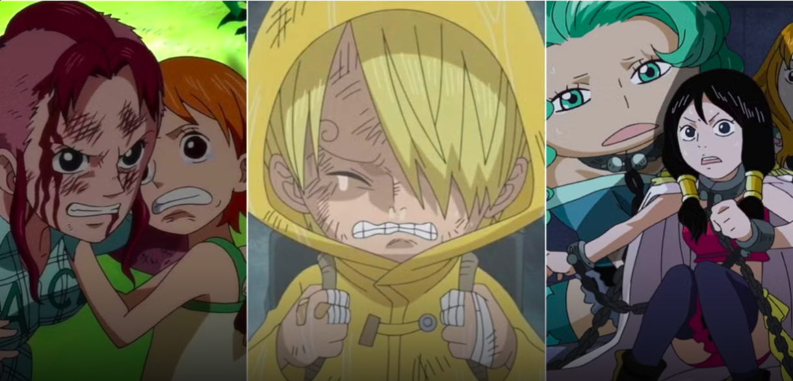
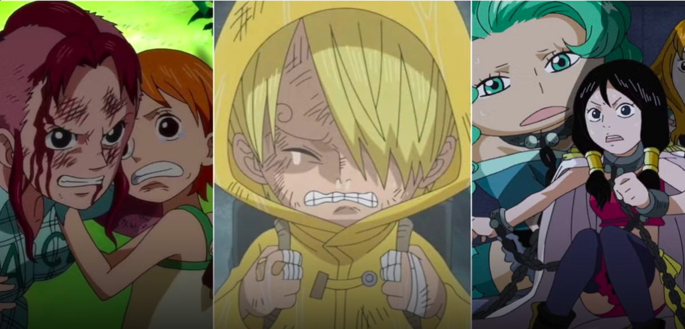
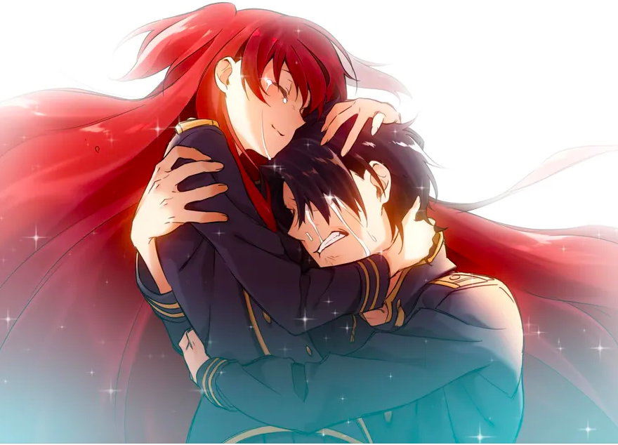
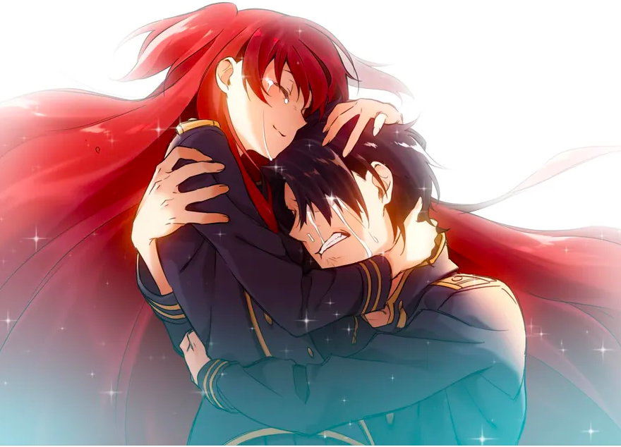
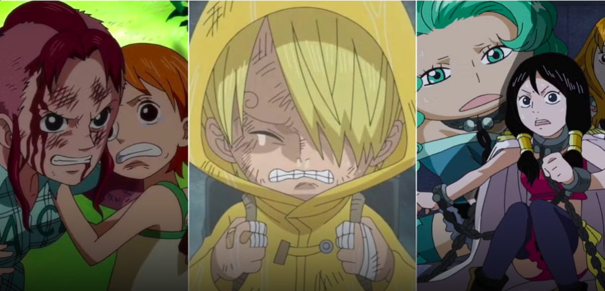
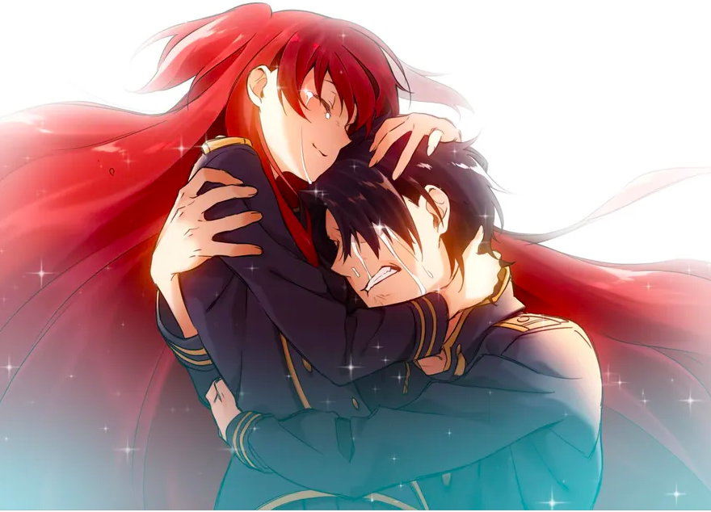

 

Why is Anime Not for Kids?
You think anime is all fun and games? Think AGAIN!


You think anime is all fun and games? Think AGAIN!
Many popular shonen anime contain extreme violence and psychological trauma. Attack on Titan, for example, depicts Titans devouring humans and the horrors of war, which are far beyond what a child can process.
Even shonen shows can have tragic events and morally complex plots. Ace’s death in One Piece shows heartbreak and loss, while some stories explore dark secrets, corruption, and ethical dilemmas that children cannot fully grasp.
Shoujo anime often explores mature relationships, betrayal, heartbreak, and emotional growth — concepts that are difficult for children to fully understand.